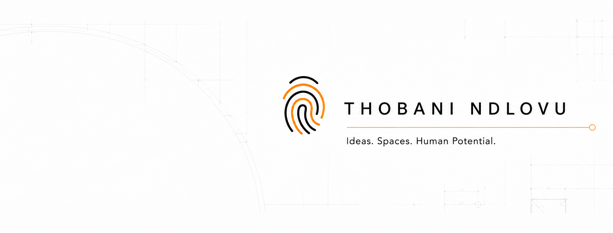
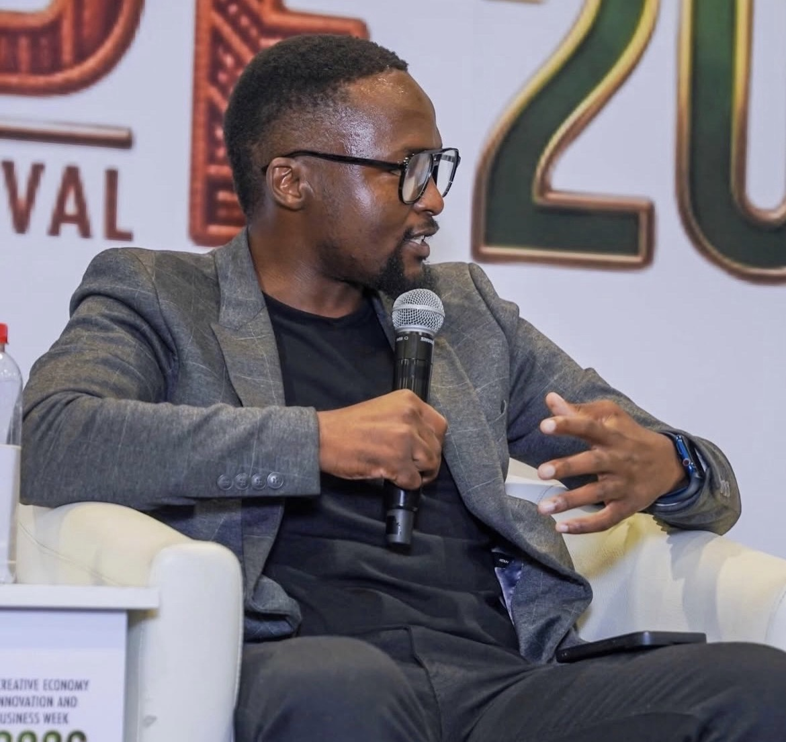
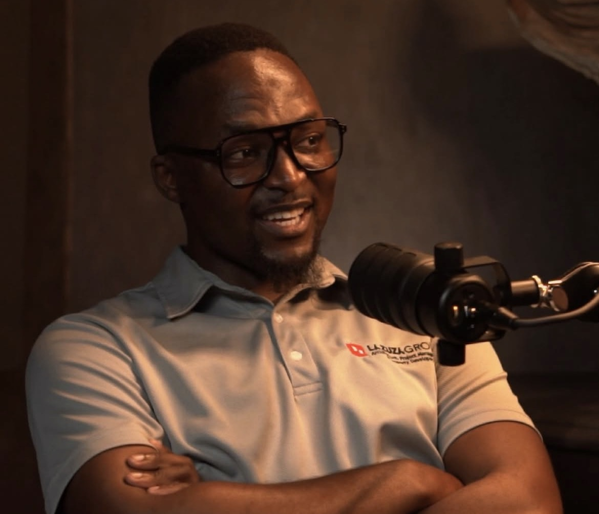

Architecture & spatial design
Kumana
Thoughtful architecture and spatial design shaped by context, experience and the lives that unfold within a place.
Explore Kumana
Durban, South Africa
Ideas shape the world within us.
Spaces shape the world around us.
Together they shape how we experience life.
About
Architectural professional · Curator · Speaker · Writer
Thobani Ndlovu is an architectural professional, curator, speaker and writer whose work explores how spaces and ideas shape people, communities and cities.
As the founder of Kumana, he works across architecture and spatial design, and as Curator and Licensee of TEDxDurban, he builds platforms for ideas, develops speakers and creates rooms in which South Africa and her leaders can think aloud about their future.
These worlds are connected by one enduring interest: the environments we create and the people we become within them.
Start a conversationThe work
Two expressions. One point of view.
Architecture & spatial design
Thoughtful architecture and spatial design shaped by context, experience and the lives that unfold within a place.
Explore KumanaIdeas, curation & community
A platform for ideas and conversations that move beyond the stage and into the life of a city.
Visit TEDxDurbanSpeaking

KZN Creative Economy Week · 2026
Keynotes · Panels · Moderation · Facilitation
I speak about ideas, spaces, curiosity, leadership and the communities we are trying to build.
My perspective is shaped by architecture, curating TEDxDurban and the experience of building independent platforms. Every engagement is tailored to the audience and the question that needs to be explored.
How curiosity can transform setbacks into opportunities for learning and new direction.
Why meaningful leadership begins with self-awareness and the person in the mirror.
How language, conversations and ideas shape relationships, communities and what we believe is possible.
Why our relationship with artificial intelligence should help us lean further into empathy, imagination, curiosity and everything that makes us human.

“Words create worlds. Conversations can start wars or build families.”
Thobani Ndlovu · The Incredible Machines Podcast
My Thoughts
Notes on space, cities, leadership and perspective
I write to examine what I am seeing - in buildings, cities, conversations, leadership, sport and everyday life. The aim is not always to provide an answer. Sometimes it is to find a better question.
What changes when leadership becomes less about certainty and more about responding well to what we cannot command?
Lessons from the Jürgen Klopp era on belief, culture and the patient work of building a team.
A reflection on leadership, listening and creating enough room for other people’s ideas.
Thobani is also the author of Leading Through the Mirror.
Follow my writing on LinkedInLet’s build something meaningful